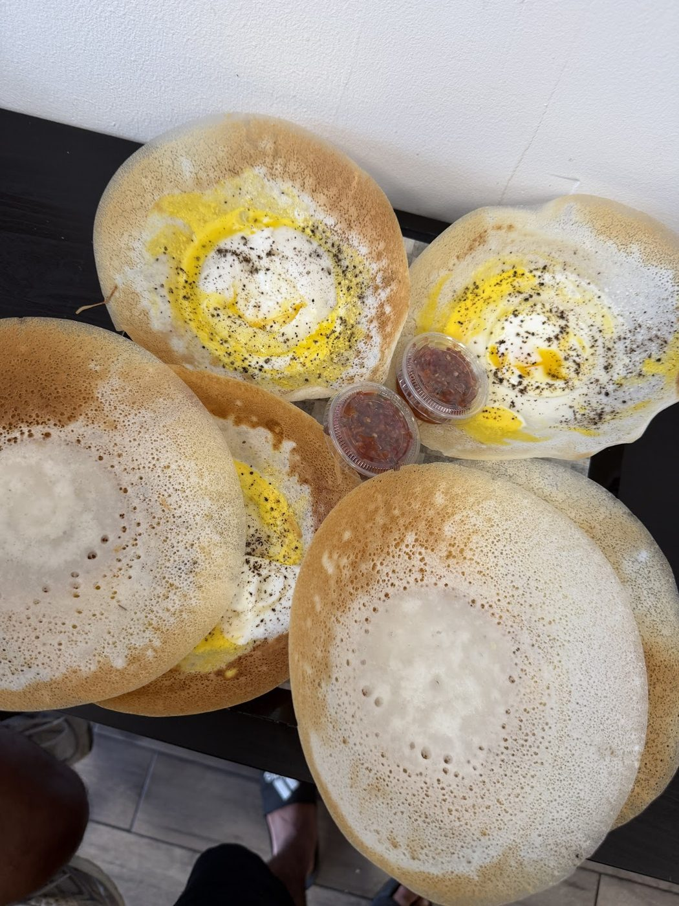

Sri Lankan hoppers · Markham Road, Scarborough
Colombo-style hoppers and lamprais, in Scarborough.
A hoppers counter at 2901 Markham Road, Unit 21. Reviewers talk about crispy plain, egg and milk hoppers, lamprais, and a cup of ginger tea at the end. Call (416) 788-6861 to order.
- Plain, egg & milk hoppers
- Lamprais
- Egg & fish rolls
- Watalappan
- Ginger tea
From the hopper pan
Hoppers (appa)
Reviewers keep coming for Colombo-style hoppers — plain, egg and milk. MP called them “crispy and tasty.” Mahesh Thilakarathna finished four hoppers and came back for katta sambal and ginger tea.
Lamprais & short eats
Rajeeshun Arudchelvam, who grew up in Colombo, called the lamprais “absolutely superb” and “easily one of the best I’ve had in Toronto.” He also tried egg and fish rolls. MP singled out the watalappan.
A casual pickup counter
Google lists Hopper King as a food court. The Hopper King sign sits over the Colombo Convenience storefront in a Markham Road plaza. Reviewers describe friendly service and a simple, casual stop — more of a counter than a dressed-up dining room.
This list comes from dishes named in Google reviews (read on the listing 2026-11-13) and from photos on the public Google listing. No prices are listed here. Call (416) 788-6861 if you have questions about the menu or a larger order.
Unit 21, 2901 Markham Road
A hoppers counter with a Colombo sign over the door
Open daily, 10 a.m. to 10 p.m.
Hopper King - Colombo Aappa Kadai is a Sri Lankan hoppers counter in a Scarborough plaza. The Hopper King sign sits over the Colombo Convenience storefront. Reviewers talk about hoppers that remind them of Colombo, a banana-leaf lamprais, and staff who are glad to see you.
“Hands down, the best hoppers you can find in the GTA!”
Dinusha Hewage, Google review (as of Nov 13, 2026).
What customers say
4.8 ★ from 204 Google reviews (checked Nov 13, 2026). Quotes are word for word. Each one says where it was read: on the Google listing itself, or on a public page that copies reviews.
★★★★★
Having grown up mostly in Colombo, I’ve always been very fond of authentic Sri Lankan Sinhalese food, especially hoppers (appam) and lamprais. I’ve been looking for a good Sinhalese restaurant in Toronto that could bring back those familiar flavours, and I’m so glad I finally found this place!
I tried their lamprais, and it was absolutely superb — a truly authentic Sri Lankan lamprais and easily one of the best I’ve had in Toronto.
I also tried the egg hopper and plain hopper with ginger plain tea. The taste immediately reminded me of the famous Colombo-style hoppers I grew up enjoying. Excellent taste and very authentic! Egg and fish rolls also tasted well.
The service was also very friendly and welcoming.
My humble suggestion to the owner would be to include katta sambol or coconut sambol with the hoppers. I had to purchase them separately, which felt a little unusual, as they traditionally go hand-in-hand with hoppers. Also lots of room to improve the ambience.
Overall, a wonderful experience. We’ll definitely be coming back frequently, and I’ll happily recommend this place to everyone in my circle. Highly recommended for anyone looking for authentic Sri Lankan flavours!
★★★★
Best Sri Lankan hoppers in town! Tried their regular hoppers, egg hoppers and milk hoppers and they all were so good. Crispy and tasty! Also had the watalappan and it was the best! ❤️
Totally recommend this place to anyone who’s craving hoppers Lankan style!!! 🙂
★★★★★
Amazing Sri Lankan food! 🇱🇰❤️ If you’re craving authentic Sri Lankan hoppers in Canada, this is definitely a place to visit. The food is delicious, fresh, and full of flavour. I really enjoyed the taste and the overall experience. A great spot for anyone who loves Sri Lankan cuisine. Highly recommended! 😍🇱🇰 Will definitely visit again!
★★★★★
I ordered these two egg hoppers & plain hoppers for me & my friend..sorry my friend...😅l had to buy again for him..finished these four alone..superb👌...katta sambal...after everything ginger tea...suppa...nallam..best of luck you guys...🤜🤛
★★★★★
Hands down, the best hoppers you can find in the GTA! 😍 Authentic, delicious, and absolutely worth it. If you’re craving good Sri Lankan hoppers, this is the place to go! ❤️🇱🇰
Off the pan
Real photos from Hopper King’s public Google listing and its customers’ reviews. Tap to enlarge.
Visit Hopper King
2901 Markham Rd, Unit 21
Scarborough, ON M1X 0B6
Markham Road, Scarborough
| Monday | 10 a.m.–10 p.m. |
|---|---|
| Tuesday | 10 a.m.–10 p.m. |
| Wednesday | 10 a.m.–10 p.m. |
| Thursday | 10 a.m.–10 p.m. |
| Friday | 10 a.m.–10 p.m. |
| Saturday | 10 a.m.–10 p.m. |
| Sunday | 10 a.m.–10 p.m. |
These are the hours on Google today: 10 a.m. to 10 p.m. every day. An older exa.ai copy of the listing shows 8 a.m. to 12 a.m. and a stale 4.3 rating from 6 reviews; Google is used here. Google lists hopperking.ca as the website, but that address returned an error today (HTTP 500, and HTTPS failed), so it isn’t linked.